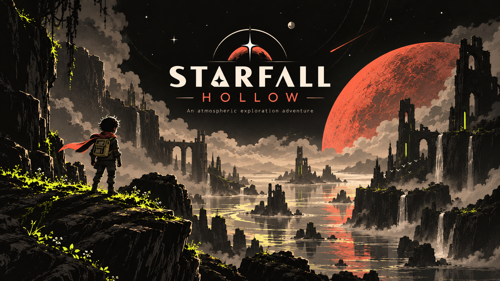
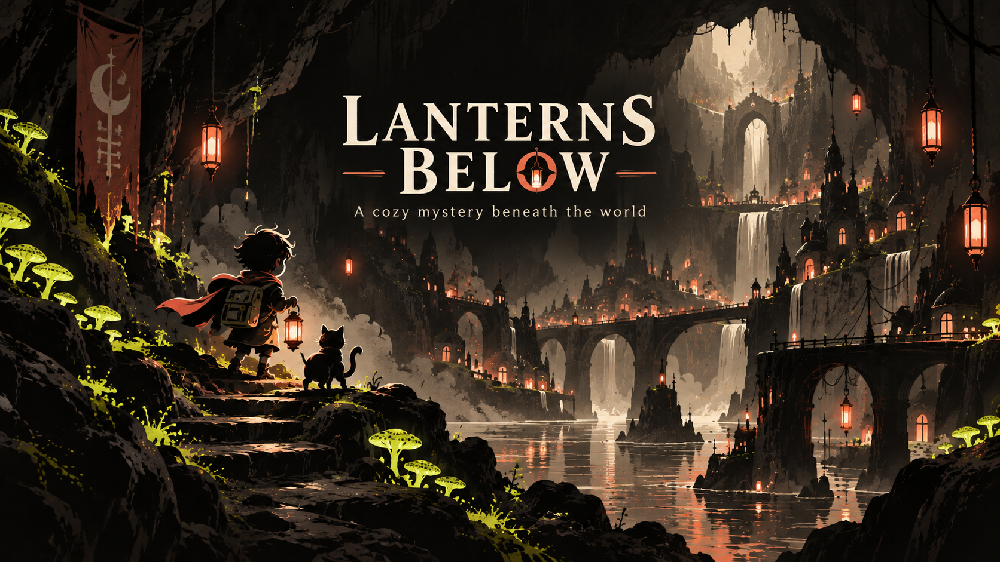
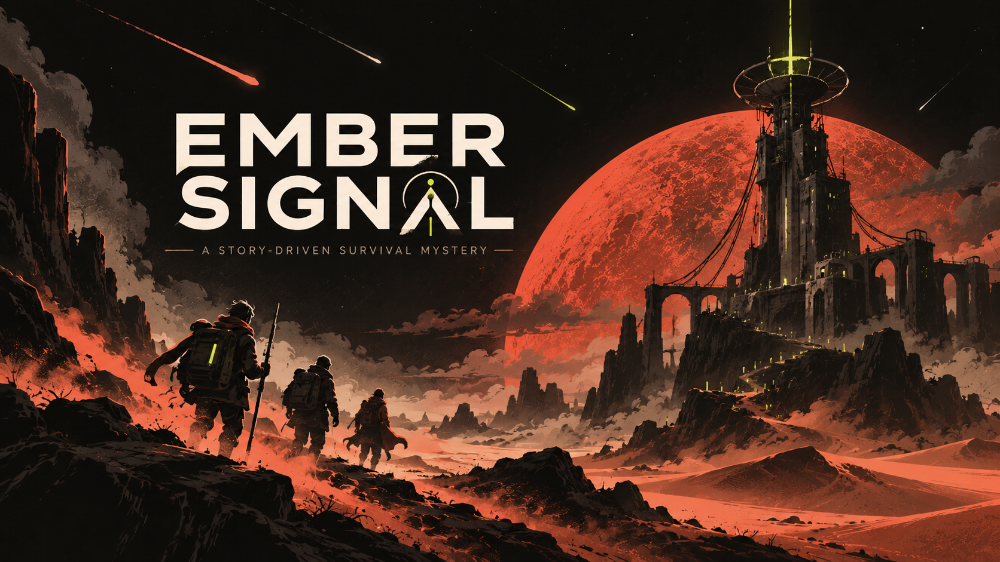

Starfall hollow
(Fő project)
A világ rég elfeledett titkokat őriz a sziklák között. A vörös bolygó fénye minden éjjel végigsöpör a tájon, mintha figyelné azokat, akik még mernek útnak indulni. A romok között ősi mechanizmusok zümmögnek, néha felvillan egy-egy kék fény, mintha a múlt próbálna üzenni. Te vagy az egyik utolsó Vándor, aki még hisz abban, hogy Starfall Hollow mélyén több rejlik puszta köveknél. A hátizsákodban csak a legszükségesebb felszerelés, a nyakad körül lobogó vörös kendő pedig a régi expedíciók jelképe — azoké, akik sosem tértek vissza. Ahogy a szél végigsöpör a szurdokon, egy halk, fémes rezonancia üti meg a füled. A föld alatt valami mozdul. Valami, ami talán sosem akart újra felébredni. A kérdés egyszerű: Készen állsz belépni a mélységbe, ahol a csillagok hullása nem legenda, hanem valóság?

Lanterns below
A Lanterns Below egy misztikus kalandjáték, amely egy titokzatos, föld alatti világ mélyére kalauzol. Fedezz fel ősi barlangokat, elhagyatott városokat és elfeledett ösvényeket, ahol minden sarok új titkot rejt. Utazásod során különös lényekkel és veszélyes ellenfelekkel találkozol, miközben próbálod megfejteni a mélyben rejlő rejtélyeket. A világot apró részletek, különleges fények és hangulatos környezet teszi igazán élővé. Gyűjts tárgyakat, oldj meg rejtvényeket és fedezd fel azokat a helyeket, ahová mások már rég nem merészkednek. A döntéseid hatással lehetnek az utadra, ezért minden felfedezés új lehetőségeket nyithat meg előtted. Ahogy egyre mélyebbre jutsz, egy régi történet kezd kirajzolódni a felszín alatti világ múltjáról. Vajon megtalálod, mi rejtőzik a lámpások fényén túl?
